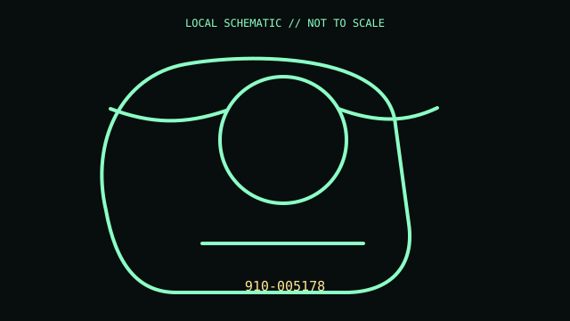

[ MICE AND TRACKBALLS // IDENTIFIED COMPONENT ]
Logitech MX Ergo Wireless Trackball
Right-hand thumb-operated trackball with tilting metal hinge and switchable precision mode.

MODEL IDENTIFICATION: Exact model / identifier: 910-005178. Confirm label, package suffix, region, and revision against manufacturer documentation.
Model specifications
| Catalog subcategory | Mice and trackballs |
|---|---|
| Exact model / ID | 910-005178 |
| Physical mechanism and primary specifications | Optical trackball; eight buttons; scroll wheel with tilt; 0°/20° adjustable base; Bluetooth LE or 2.4 GHz Unifying receiver; rechargeable battery. |
| Host, interface, and driver caveats | Bluetooth or Unifying receiver provides pointer input; this model does not use Logi Bolt. Options/Options+ and host support affect remapping and Flow features. MX Ergo S is a different generation. |
| Revision identification | Record the complete printed SKU/PID, hardware revision, regional layout, and supplied accessories; similarly named variants may use different interfaces, drivers, or components. |
Preservation and service notes
Lift ball to clean its support contacts with a dry swab; do not scratch ball or use lubricant. Keep hinged base free of ferrous debris; do not open battery assembly.
Record unit condition, accessories, host OS, software/firmware version, and test conditions separately from manufacturer-published specifications.
Primary manufacturer documentation
- Logitech MX Ergo product pageManufacturer product or support documentation; verify exact model and regional revision against the device label.
- Logitech MX Ergo supportManufacturer product or support documentation; verify exact model and regional revision against the device label.
Support pages can change; preserve the applicable manual and its revision with the physical equipment record.